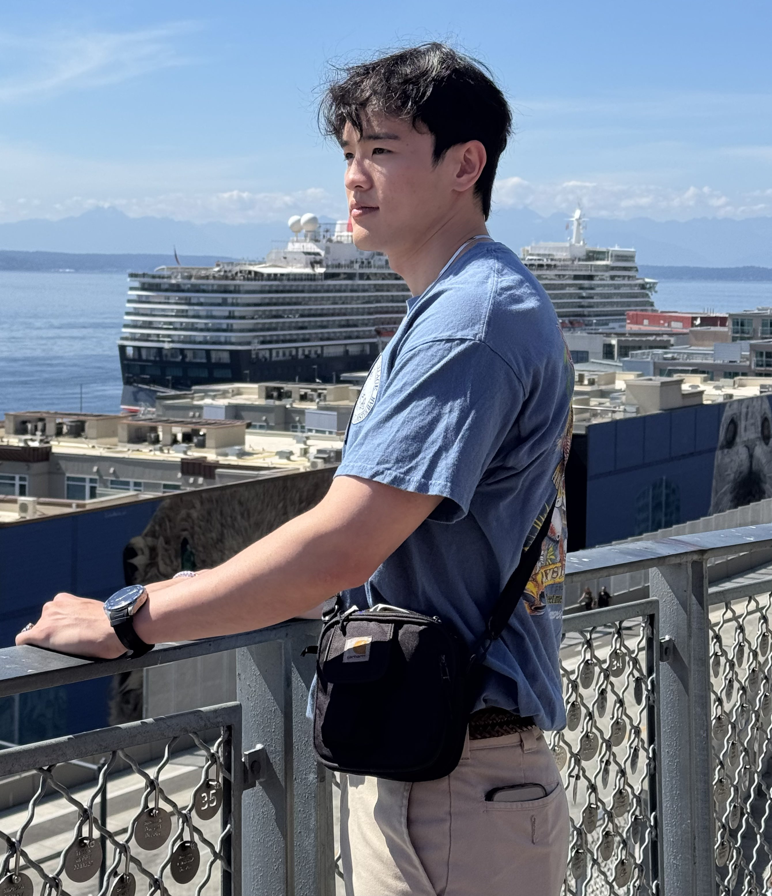
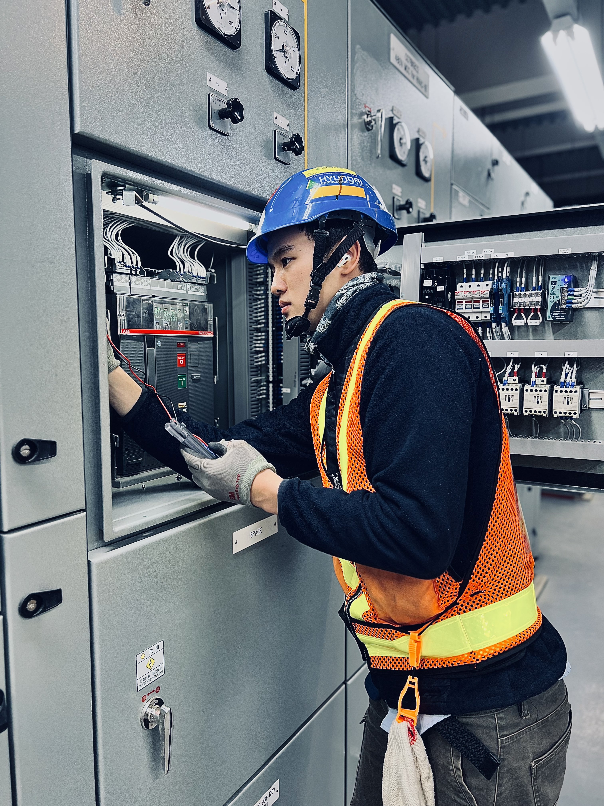
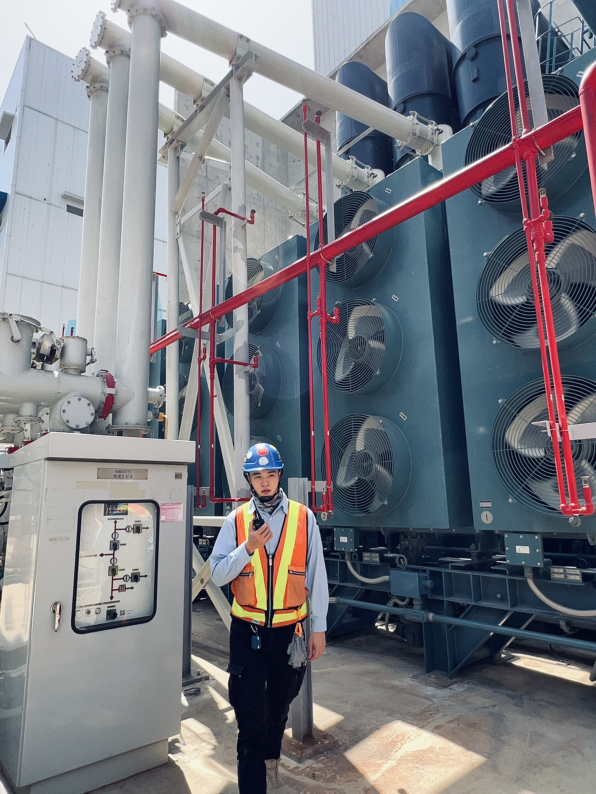
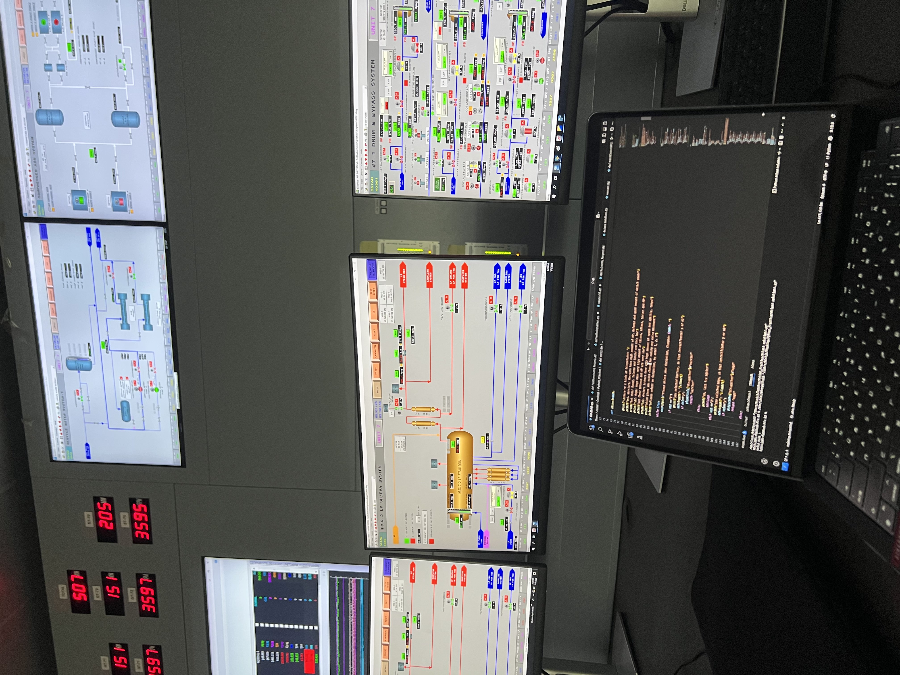
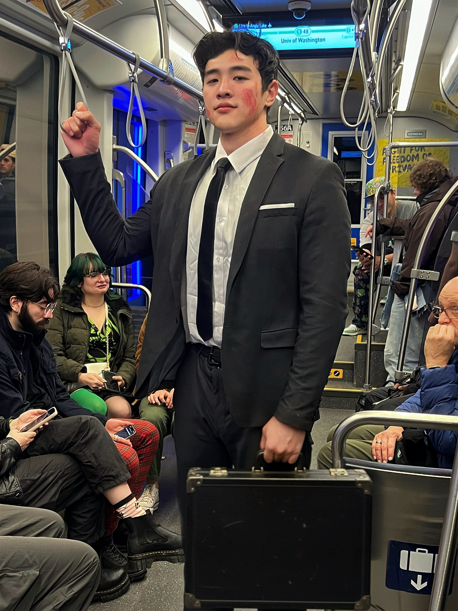
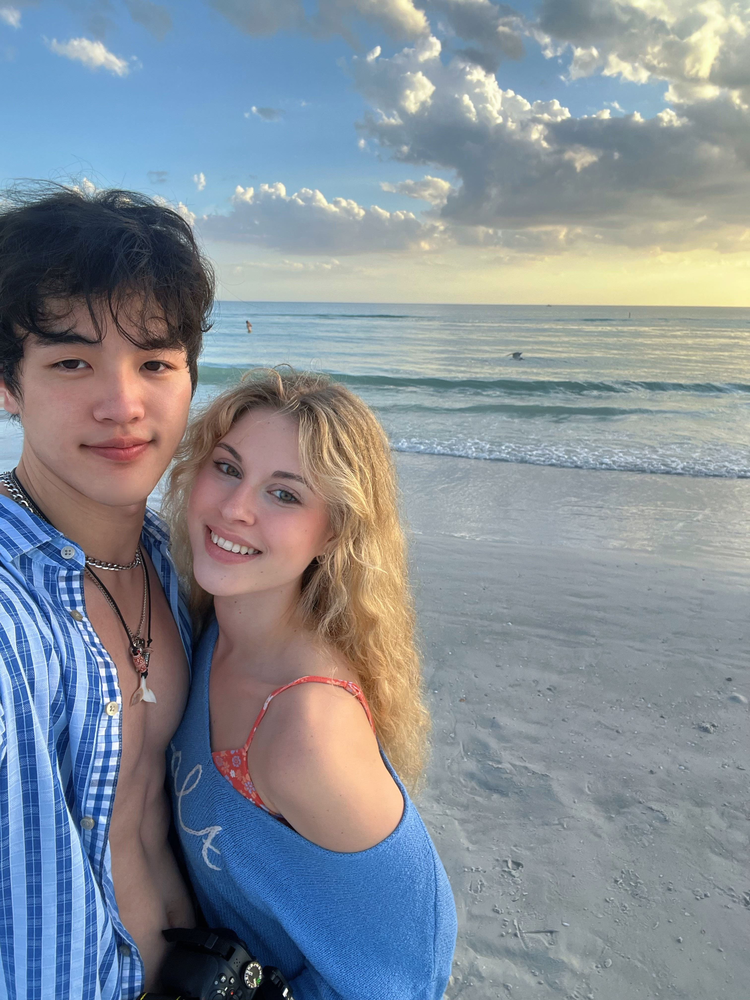
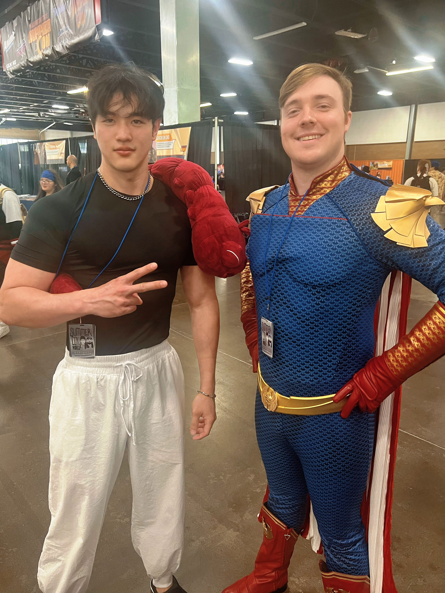

About Me

Hello and welcome to my page! My name is Chang Chi Hua, but you can call me Ethan.
I'm originally from Taiwan and currently based in Seattle, where I'm pursuing my Master's in Computer Science at Northeastern University.
My background


My path into software engineering wasn't exactly traditional. Before coming to Northeastern, I spent about two years working as an Electrical Engineer in the power generation industry, supporting combined-cycle power plant projects with Hyundai Engineering and Mitsubishi-related engineering teams. I worked on electrical equipment testing and commissioning, medium-voltage power systems, transformers, UPS and emergency power systems, as well as industrial control and monitoring systems. I was also involved in electrical isolation, Lockout/Tagout (LOTO), and commissioning procedures where safety, precision, and communication across engineering teams were critical. That experience shaped the way I approach technical problems today. Working with large-scale industrial systems taught me to think beyond individual components and understand how different parts interact as a whole. I enjoy troubleshooting complex problems, finding the root cause, and building solutions that are reliable in the real world.
Transitioning to Software Engineering

That mindset eventually led me to make the transition into Computer Science and Software Engineering. At Northeastern, I've been developing a broader understanding of software design, algorithms, data management, system architecture, full-stack development, and the software development lifecycle. I'm particularly interested in building practical software and exploring how AI can be integrated into the way we design, develop, and use software. What I enjoy most about software is the ability to turn an idea into something people can actually use. I like working through the entire process, from understanding a problem and designing a solution to implementing it, debugging it, and improving it along the way. I'm still learning every day, but my engineering background gives me a different perspective on problem-solving, especially when it comes to understanding complex systems and thinking about reliability and real-world constraints.
Outside of Work



Outside of school and coding, I like to stay active. You'll usually find me working out, skiing, hiking, playing sports, or exploring Seattle. I also enjoy discovering new restaurants and places around the city and spending time with friends. Moving from Taiwan to the U.S. and making a career transition from electrical engineering to software engineering has been a major change, but also one of the most rewarding experiences I've had. I'm excited to keep learning, build things that are useful, and see where this next chapter takes me.